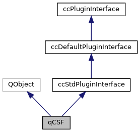
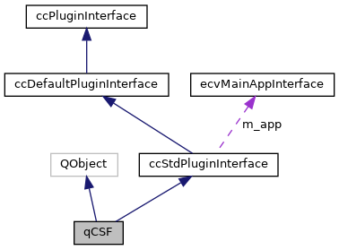

|
ACloudViewer
3.9.3
A Modern Library for 3D Data Processing
|
|
ACloudViewer
3.9.3
A Modern Library for 3D Data Processing
|
A point-clouds filtering algorithm utilize cloth simulation process. More...
#include <qCSF.h>


Public Member Functions | |
| qCSF (QObject *parent=nullptr) | |
| Default constructor. More... | |
| virtual | ~qCSF ()=default |
| virtual void | onNewSelection (const ccHObject::Container &selectedEntities) override |
| virtual QList< QAction * > | getActions () override |
| virtual void | registerCommands (ccCommandLineInterface *cmd) override |
Protected Slots | |
| void | doAction () |
| Slot called when associated ation is triggered. More... | |
Protected Attributes | |
| QAction * | m_action |
| Associated action. More... | |
A point-clouds filtering algorithm utilize cloth simulation process.
|
explicit |
|
virtualdefault |
|
protectedslot |
Slot called when associated ation is triggered.
Definition at line 64 of file qCSF.cpp.
References ccHObject::addChild(), cloudViewer::ReferenceCloud::addPointIndex(), CSF::Parameters::bSloopSmooth, CSF::Parameters::class_threshold, class_threshold, CSF::Parameters::cloth_resolution, cloth_resolution, ccMesh::computePerVertexNormals(), count, CSF::do_filtering(), ccObject::getName(), cloudViewer::PointCloudTpl< T >::getPoint(), ccObject::isA(), CSF::Parameters::iterations, CSF::Parameters::k_nearest_points, MaxIteration, CSF::params, ccPointCloud::partialClone(), CV_TYPES::POINT_CLOUD, cloudViewer::ReferenceCloud::reserve(), CSF::Parameters::rigidness, ccObject::setEnabled(), ccObject::setName(), ccDrawableObject::setVisible(), ccGenericMesh::showNormals(), cloudViewer::PointCloudTpl< T >::size(), CSF::Parameters::time_step, Tuple3Tpl< Type >::x, wl::Point::x, Tuple3Tpl< Type >::y, wl::Point::y, Tuple3Tpl< Type >::z, and wl::Point::z.
Referenced by getActions().
|
overridevirtual |
Definition at line 52 of file qCSF.cpp.
References doAction(), and m_action.
|
overridevirtual |
Definition at line 46 of file qCSF.cpp.
References m_action, and CV_TYPES::POINT_CLOUD.
|
overridevirtual |
|
protected |
Associated action.
Definition at line 37 of file qCSF.h.
Referenced by getActions(), and onNewSelection().